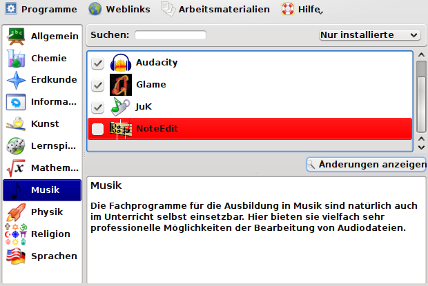
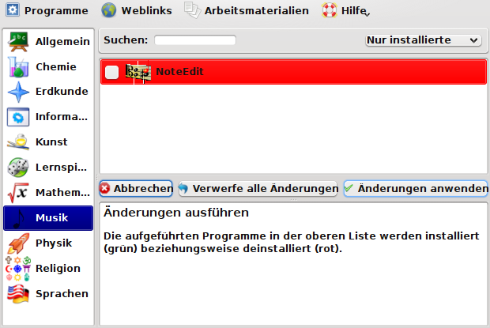
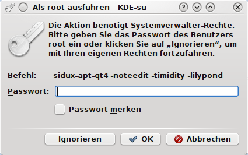
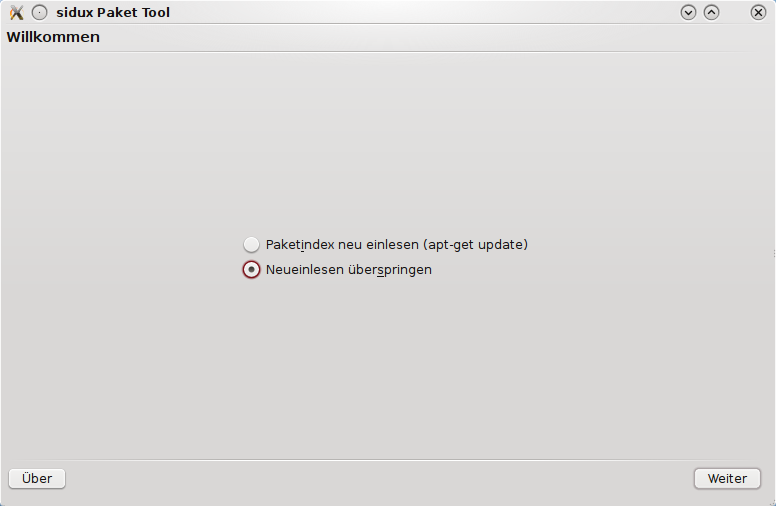
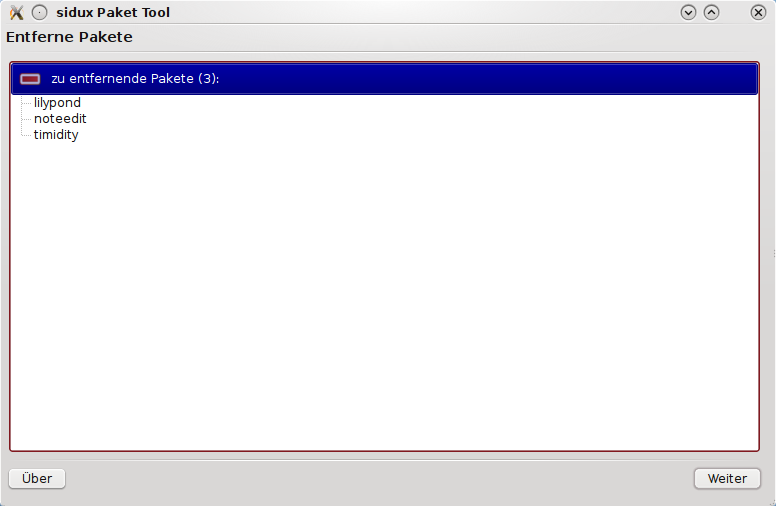
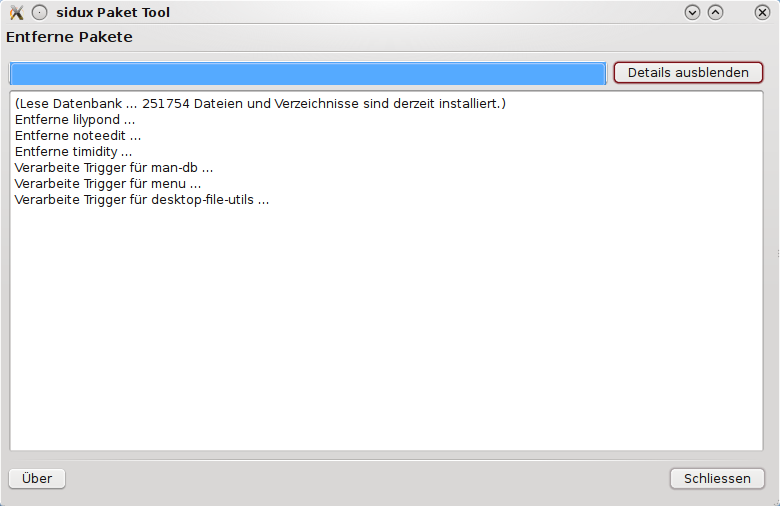

eduversum Hilfe
Allgemeines zur Benutzung vom "eduversum" | Installation von Programmen | en
Deinstallation eines Programmes
Programm-Auswahl
Um ein Programm zu deinstallieren, markieren Sie dieses und entfernen den Haken der Auswahl.

Auf < Änderungen anzeigen > klicken.
Änderung bestätigen
Im darauffolgenden Dialog werden die zu deinstallierenden Programme noch einmal aufgeführt. Die Auswahl kann immer noch rückgängig gemacht werden, in dem Sie den Deinstallationsvorgang abbrechen beziehungsweise die Änderungen verwerfen.

Wollen Sie die Deinstallation fortsetzen, so klicken Sie < Änderungen anwenden >.
Passwort-Dialog
Auch bei einer Deinstallation werden "root" Rechte benötigt, die Gründe hiefür sind im Kapitel "Installation" erklärt.

Tragen Sie das "root" Passwort ein und klicken Sie < OK >.
Update-Dialog
Bei einer Deinstallation kann auf das Updaten der Paketdatenbank verzichtet werden. Markieren Sie "Neueinlesen überspringen".

Klicken Sie < Weiter >.
Deinstallations-Dialog
Nun wird Ihnen angezeigt, was deinstalliert wird. Dort wird auch angezeigt, welche zusätzlichen Programm-Pakete mit deinstalliert werden.

Klicken Sie < Weiter >.
Abschluss-Dialog
Ist die Deinstallation abgeschlossen, so klicken Sie < Schliessen >.

Allgemeines zur Benutzung vom "eduversum" | Installation von Programmen | en
Copyright © 2009, Hendrik Lehmbruch: CC-by-SA 3.0